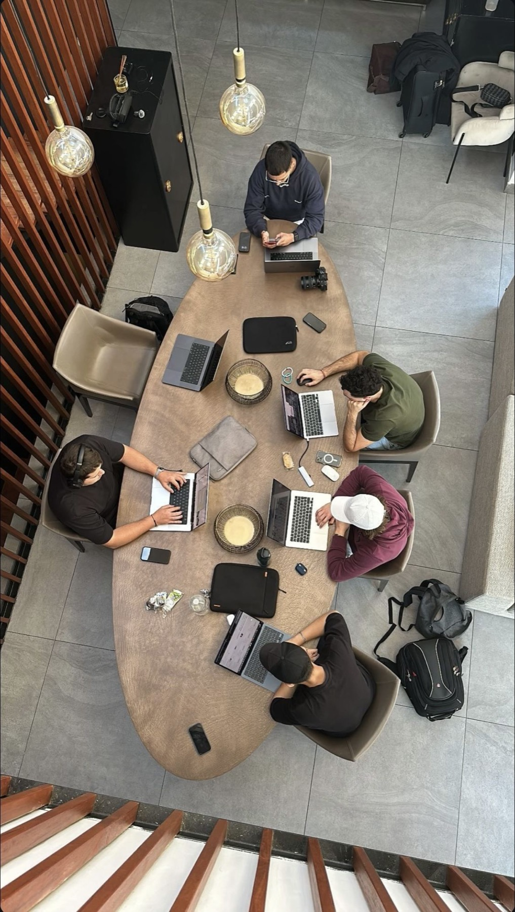

Bespoke platforms and web apps
Client portals, internal tools, SaaS interfaces. Written in code and fitted to your processes — not from a template, not from a page builder.
 Stratos
Start a project
Stratos
Start a project

Stratos / Services / Web design for enterprises
Bespoke platforms, internal systems, integrations and operations. Enterprise-grade quality, SLA and security — from strategy to launch.
In a large organisation digital development isn't a project, it's continuous operation. We design it, build it, integrate it and run it — with one team, one accountable owner and a predictable SLA.
Scope
Client portals, internal tools, SaaS interfaces. Written in code and fitted to your processes — not from a template, not from a page builder.
Connecting ERP, CRM, payment and logistics systems. APIs, data sync and a single data flow across your existing infrastructure.
A scalable component library and a consistent identity across every surface — so your brand stays coherent across markets and products.
GDPR, access management, auditability, penetration testing. Enterprise-grade security from design through to operations.
A scalable team working with you: developers, a designer and a project lead. Flexible capacity matched to the workload.
Monitoring, incident handling, versioning, backups and scaling. Guaranteed uptime and defined response times.
The process
An enterprise-grade process, fully transparent.
01 — Discovery
We map your processes, existing systems and goals. Architecture, timeline and measurable KPIs — before any development starts.
02 — Development
We work in sprints with visible output every two weeks. Design system, development, integrations and continuous alignment with your stakeholders.
03 — Rollout
A controlled rollout, training and handover. From then on we operate under SLA and keep developing — together with you.
You don't have to finish reading before you ask. Tell us your situation and you'll get a specific answer.
The comparison
Several agencies, several freelancers, several contracts — and the integration seams, questions of accountability and delays all appear where the systems meet. Knowledge fragments, and when something breaks the suppliers point at each other.
With one partner, strategy, design, development, integration and operations sit in one place. One owner, one roadmap, one SLA. Predictable pace, predictable quality — across every digital surface of the brand.
We define the SLA according to business criticality: guaranteed uptime (typically 99.9%), defined response and resolution times, and an escalation process. Exact levels are set in the contract and tracked in reports.
We design development around your existing infrastructure, integrating ERP, CRM, SSO, payment and logistics systems. We follow your internal processes, security requirements and development standards, whether the environment is cloud or on-premise.
Security is part of the design, not a layer added afterwards: access management, encryption, audit logging and regular security testing. We provide GDPR-compliant data handling, a data processing agreement, penetration tests on request, and a process aligned with your internal compliance requirements.
Yes. We design the systems on a scalable architecture from the start: multiple languages and markets, load-adaptive infrastructure, caching and CDN, and a modular build. As you grow, both the system and the assigned team capacity scale with you.
We assign a dedicated team to the project — developers, a designer and a permanent project lead who is your single point of contact. Capacity follows the workload: we scale the team up and down according to the roadmap and sprint needs.
The source code, documentation and all intellectual property are yours. We give full access to the repositories and environments, the process is transparent, and your internal team can take it over at any time — no vendor lock-in.
We use a modern, well-supported stack (React/Next.js, Node, TypeScript, cloud and container-based infrastructure), but we always pick the right tool for the task and for your existing environment. The goal is a long-term maintainable solution that follows industry standards.
Yes. First we run a technical audit: we review the code, the architecture and the risks, then propose stabilisation, further development or, where needed, a gradual rebuild. The handover is controlled and doesn't interrupt operations.
We work in sprints with regular demos and a transparent backlog. You get access to the project tracking and monitoring dashboards, and we summarise progress, KPIs and system performance in regular reports that also read at board level.
Depending on the nature of the project we can work to a fixed-price scope, a dedicated team (time & material) model or an ongoing operations retainer. We adapt to your procurement, legal and compliance processes and set all terms in a framework agreement.
Related pages and articles.
Next step
Every extra supplier means another seam, another owner and another delay. Let's talk, and we'll show you how a dedicated team brings every build onto one roadmap, one owner and one SLA.
Where should we take your business next?